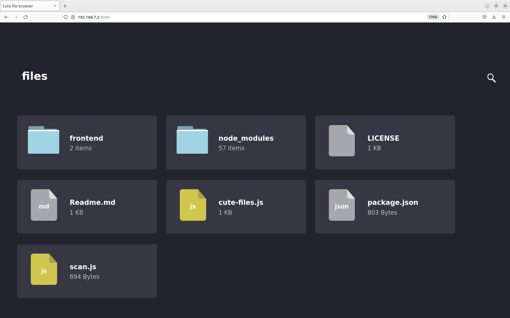

29 Working with Packages
This section describes a few tasks that involve packages:
(disabled) Creating Node Package Manager (NPM) Packages
29.1 Excluding Packages from an Image
You might find it necessary to prevent specific packages from being installed into an image. If so, you can use several variables to direct the build system to essentially ignore installing recommended packages or to not install a package at all.
The following list introduces variables you can use to prevent packages from being installed into your image. Each of these variables only works with IPK and RPM package types, not for Debian packages. Also, you can use these variables in a distro configuration file or attach them to a specific image recipe by using a recipe name override. For more detail on the variables, see the descriptions in the Yocto Project Reference Manual's glossary chapter.
BAD_RECOMMENDATIONS: Use this variable to specify "recommended-only" packages that you do not want installed.
NO_RECOMMENDATIONS: Use this variable to prevent all "recommended-only" packages from being installed.
PACKAGE_EXCLUDE: Use this variable to prevent specific packages from being installed regardless of whether they are "recommended-only" or not. You need to realize that the build process could fail with an error when you prevent the installation of a package whose presence is required by an installed package.
29.2 Incrementing a Package Version
This section provides some background on how binary package versioning is accomplished and presents some of the services, variables, and terminology involved.
In order to understand binary package versioning, you need to consider the following:
Binary Package: The binary package that is eventually built and installed into an image.
Binary Package Version: The binary package version is composed of two components --- a version and a revision.
Nota
Technically, a third component, the "epoch" (i.e. PE) is involved but this discussion for the most part ignores PE.
The version and revision are taken from the PV and PR variables, respectively.
PV: The recipe version. PV represents the version of the software being packaged. Do not confuse PV with the binary package version.
PR: The recipe revision.
PR Service: A network-based service that helps automate keeping package feeds compatible with existing package manager applications such as RPM, APT, and OPKG.
Whenever the binary package content changes, the binary package version must change. Changing the binary package version is accomplished by changing or "bumping" the PR and/or PV values. Increasing these values occurs one of two ways:
Automatically using a Package Revision Service (PR Service).
Given a primary challenge of any build system and its users is how to maintain a package feed that is compatible with existing package manager applications such as RPM, APT, and OPKG, using an automated system is much preferred over a manual system. In either system, the main requirement is that binary package version numbering increases in a linear fashion and that there is a number of version components that support that linear progression. For information on how to ensure package revisioning remains linear, see the "Automatically Incrementing a Package Version Number" section.
The following three sections provide related information on the PR Service, the manual method for "bumping" PR and/or PV, and on how to ensure binary package revisioning remains linear.
29.2.1 Working With a PR Service
As mentioned, attempting to maintain revision numbers in the Metadata is error prone, inaccurate, and causes problems for people submitting recipes. Conversely, the PR Service automatically generates increasing numbers, particularly the revision field, which removes the human element.
Nota
For additional information on using a PR Service, you can see the PR Service wiki page.
The Yocto Project uses variables in order of decreasing priority to facilitate revision numbering (i.e. PE, PV, and PR for epoch, version, and revision, respectively). The values are highly dependent on the policies and procedures of a given distribution and package feed.
Because the OpenEmbedded build system uses "signatures", which are unique to a given build, the build system knows when to rebuild packages. All the inputs into a given task are represented by a signature, which can trigger a rebuild when different. Thus, the build system itself does not rely on the PR, PV, and PE numbers to trigger a rebuild. The signatures, however, can be used to generate these values.
The PR Service works with both OEBasic and OEBasicHash
generators. The value of PR bumps when the checksum changes and the
different generator mechanisms change signatures under different
circumstances.
As implemented, the build system includes values from the PR Service
into the PR field as an addition using the form ".x" so r0
becomes r0.1, r0.2 and so forth. This scheme allows existing
PR values to be used for whatever reasons, which include manual
PR bumps, should it be necessary.
By default, the PR Service is not enabled or running. Thus, the packages generated are just "self consistent". The build system adds and removes packages and there are no guarantees about upgrade paths but images will be consistent and correct with the latest changes.
The simplest form for a PR Service is for a single host development system that builds the package feed (building system). For this scenario, you can enable a local PR Service by setting PRSERV_HOST in your build/conf/local.conf file in the Build Directory:
PRSERV_HOST = "localhost:0"
Once the service is started, packages will automatically get increasing PR values and BitBake takes care of starting and stopping the server.
If you have a more complex setup where multiple host development systems
work against a common, shared package feed, you have a single PR Service
running and it is connected to each building system. For this scenario,
you need to start the PR Service using the bitbake-prserv command:
bitbake-prserv --host ip --port port --start
In addition to hand-starting the service, you need to update the build/conf/local.conf file of each building system as described earlier so each system points to the server and port.
It is also recommended you use build history, which adds some sanity checks to binary package versions, in conjunction with the server that is running the PR Service. To enable build history, add the following to each building system's build/conf/local.conf file (or set this in your distro configuration file):
# It is recommended to activate "buildhistory" for testing the PR service
INHERIT += "buildhistory"
BUILDHISTORY_COMMIT = "1"
For information on build history, see the "Maintaining Build Output Quality with buildhistory" section.
Nota
The OpenEmbedded build system does not maintain PR information as part of the shared state (sstate) packages. If you maintain an sstate feed, it's expected that either all your building systems that contribute to the sstate feed use a shared PR service, or you do not run a PR service on any of your building systems.
That's because if you had multiple machines sharing a PR service but not their sstate feed, you could end up with "diverging" hashes for the same output artefacts. When presented to the share PR service, each would be considered as new and would increase the revision number, causing many unnecessary package upgrades.
For more information on shared state, see the "Cache di Shared State" section in the Yocto Project Overview and Concepts Manual.
29.2.2 Manually Bumping PR
The alternative to setting up a PR Service is to manually "bump" the PR variable.
If a committed change results in changing the package output, then the value of the PR variable needs to be increased (or "bumped") as part of that commit. For new recipes you should add the PR variable and set its initial value equal to "r0", which is the default. Even though the default value is "r0", the practice of adding it to a new recipe makes it harder to forget to bump the variable when you make changes to the recipe in future.
Usually, version increases occur only to binary packages. However, if for some reason PV changes but does not increase, you can increase the PE variable (Package Epoch). The PE variable defaults to "0".
Binary package version numbering strives to follow the Debian Version Field Policy Guidelines. These guidelines define how versions are compared and what "increasing" a version means.
29.2.3 Automatically Incrementing a Package Version Number
When fetching a repository, BitBake uses the SRCREV variable to determine the specific source code revision from which to build. You set the SRCREV variable to AUTOREV to cause the OpenEmbedded build system to automatically use the latest revision of the software:
SRCREV = "${AUTOREV}"
Furthermore, you need to include a + sign in PV in order to
automatically update the version whenever the revision of the source
code changes. Here is an example:
PV = "1.0+git"
The OpenEmbedded build system will automatically add the source control information to the end of the variable PKGV, in this format:
AUTOINC+source_code_revision
The build system replaces the AUTOINC
with a number. The number used depends on the state of the PR Service:
If PR Service is enabled, the build system increments the number, which is similar to the behavior of PR. This behavior results in linearly increasing package versions, which is desirable. Here is an example:
hello-world-git_1.0+git0+b6558dd387-r0.0_armv7a-neon.ipk hello-world-git_1.0+git1+dd2f5c3565-r0.1_armv7a-neon.ipk
Two numbers got incremented here:
gitXchanged fromgit0togit1. This is because there was a change in the source code (SRCREV).r0.Xchanged fromr0.0tor0.1. This is because the hash of the do_package task changed.The reason for this change can be many. To understand why the hash of the do_package task changed, you can run the following command:
$ bitbake-diffsigs -t hello-world package
If PR Service is not enabled, the build system replaces the
AUTOINCplaceholder with zero (i.e. "0"). This results in changing the package version since the source revision is included. However, package versions are not increased linearly. Here is an example:hello-world-git_1.0+git0+b6558dd387-r0_armv7a-neon.ipk hello-world-git_1.0+git0+dd2f5c3565-r0_armv7a-neon.ipk
In summary, the OpenEmbedded build system does not track the history of
binary package versions for this purpose. AUTOINC, in this case, is
comparable to PR. If PR server is not enabled, AUTOINC in the
package version is simply replaced by "0". If PR server is enabled, the
build system keeps track of the package versions and bumps the number
when the package revision changes.
29.3 Handling Optional Module Packaging
Many pieces of software split functionality into optional modules (or plugins) and the plugins that are built might depend on configuration options. To avoid having to duplicate the logic that determines what modules are available in your recipe or to avoid having to package each module by hand, the OpenEmbedded build system provides functionality to handle module packaging dynamically.
To handle optional module packaging, you need to do two things:
Ensure the module packaging is actually done.
Ensure that any dependencies on optional modules from other recipes are satisfied by your recipe.
29.3.1 Making Sure the Packaging is Done
To ensure the module packaging actually gets done, you use the
do_split_packages function within the populate_packages Python
function in your recipe. The do_split_packages function searches for
a pattern of files or directories under a specified path and creates a
package for each one it finds by appending to the
PACKAGES variable and
setting the appropriate values for FILES:packagename,
RDEPENDS:packagename, DESCRIPTION:packagename, and so forth.
Here is an example from the lighttpd recipe:
python populate_packages:prepend () {
lighttpd_libdir = d.expand('${libdir}')
do_split_packages(d, lighttpd_libdir, '^mod_(.*).so$',
'lighttpd-module-%s', 'Lighttpd module for %s',
extra_depends='')
}
The previous example specifies a number of things in the call to
do_split_packages.
A directory within the files installed by your recipe through do_install in which to search.
A regular expression used to match module files in that directory. In the example, note the parentheses () that mark the part of the expression from which the module name should be derived.
A pattern to use for the package names.
A description for each package.
An empty string for
extra_depends, which disables the default dependency on the mainlighttpdpackage. Thus, if a file in${libdir}calledmod_alias.sois found, a package calledlighttpd-module-aliasis created for it and the DESCRIPTION is set to "Lighttpd module for alias".
Often, packaging modules is as simple as the previous example. However,
there are more advanced options that you can use within
do_split_packages to modify its behavior. And, if you need to, you
can add more logic by specifying a hook function that is called for each
package. It is also perfectly acceptable to call do_split_packages
multiple times if you have more than one set of modules to package.
For more examples that show how to use do_split_packages, see the
connman.inc file in the meta/recipes-connectivity/connman/
directory of OpenEmbedded-Core (OE-Core). You can
also find examples in meta/classes-recipe/kernel.bbclass.
Here is a reference that shows do_split_packages mandatory and
optional arguments:
Mandatory arguments
root
The path in which to search
file_regex
Regular expression to match searched files.
Use parentheses () to mark the part of this
expression that should be used to derive the
module name (to be substituted where %s is
used in other function arguments as noted below)
output_pattern
Pattern to use for the package names. Must
include %s.
description
Description to set for each package. Must
include %s.
Optional arguments
postinst
Postinstall script to use for all packages
(as a string)
recursive
True to perform a recursive search --- default
False
hook
A hook function to be called for every match.
The function will be called with the following
arguments (in the order listed):
f
Full path to the file/directory match
pkg
The package name
file_regex
As above
output_pattern
As above
modulename
The module name derived using file_regex
extra_depends
Extra runtime dependencies (RDEPENDS) to be
set for all packages. The default value of None
causes a dependency on the main package
(${PN}) --- if you do not want this, pass empty
string '' for this parameter.
aux_files_pattern
Extra item(s) to be added to FILES for each
package. Can be a single string item or a list
of strings for multiple items. Must include %s.
postrm
postrm script to use for all packages (as a
string)
allow_dirs
True to allow directories to be matched -
default False
prepend
If True, prepend created packages to PACKAGES
instead of the default False which appends them
match_path
match file_regex on the whole relative path to
the root rather than just the filename
aux_files_pattern_verbatim
Extra item(s) to be added to FILES for each
package, using the actual derived module name
rather than converting it to something legal
for a package name. Can be a single string item
or a list of strings for multiple items. Must
include %s.
allow_links
True to allow symlinks to be matched --- default
False
summary
Summary to set for each package. Must include %s;
defaults to description if not set.
29.3.2 Satisfying Dependencies
The second part for handling optional module packaging is to ensure that
any dependencies on optional modules from other recipes are satisfied by
your recipe. You can be sure these dependencies are satisfied by using
the PACKAGES_DYNAMIC
variable. Here is an example that continues with the lighttpd recipe
shown earlier:
PACKAGES_DYNAMIC = "lighttpd-module-.*"
The name
specified in the regular expression can of course be anything. In this
example, it is lighttpd-module- and is specified as the prefix to
ensure that any RDEPENDS and
RRECOMMENDS on a package
name starting with the prefix are satisfied during build time. If you
are using do_split_packages as described in the previous section,
the value you put in PACKAGES_DYNAMIC should correspond to the name
pattern specified in the call to do_split_packages.
29.4 Using Runtime Package Management
During a build, BitBake always transforms a recipe into one or more
packages. For example, BitBake takes the bash recipe and produces a
number of packages (e.g. bash, bash-bashbug,
bash-completion, bash-completion-dbg, bash-completion-dev,
bash-completion-extra, bash-dbg, and so forth). Not all
generated packages are included in an image.
In several situations, you might need to update, add, remove, or query the packages on a target device at runtime (i.e. without having to generate a new image). Examples of such situations include:
You want to provide in-the-field updates to deployed devices (e.g. security updates).
You want to have a fast turn-around development cycle for one or more applications that run on your device.
You want to temporarily install the "debug" packages of various applications on your device so that debugging can be greatly improved by allowing access to symbols and source debugging.
You want to deploy a more minimal package selection of your device but allow in-the-field updates to add a larger selection for customization.
In all these situations, you have something similar to a more traditional Linux distribution in that in-field devices are able to receive pre-compiled packages from a server for installation or update. Being able to install these packages on a running, in-field device is what is termed "runtime package management".
In order to use runtime package management, you need a host or server machine that serves up the pre-compiled packages plus the required metadata. You also need package manipulation tools on the target. The build machine is a likely candidate to act as the server. However, that machine does not necessarily have to be the package server. The build machine could push its artifacts to another machine that acts as the server (e.g. Internet-facing). In fact, doing so is advantageous for a production environment as getting the packages away from the development system's Build Directory prevents accidental overwrites.
A simple build that targets just one device produces more than one
package database. In other words, the packages produced by a build are
separated out into a couple of different package groupings based on
criteria such as the target's CPU architecture, the target board, or the
C library used on the target. For example, a build targeting the
qemux86 device produces the following three package databases:
noarch, i586, and qemux86. If you wanted your qemux86
device to be aware of all the packages that were available to it, you
would need to point it to each of these databases individually. In a
similar way, a traditional Linux distribution usually is configured to
be aware of a number of software repositories from which it retrieves
packages.
Using runtime package management is completely optional and not required for a successful build or deployment in any way. But if you want to make use of runtime package management, you need to do a couple things above and beyond the basics. The remainder of this section describes what you need to do.
29.4.1 Build Considerations
This section describes build considerations of which you need to be aware in order to provide support for runtime package management.
When BitBake generates packages, it needs to know what format or formats to use. In your configuration, you use the PACKAGE_CLASSES variable to specify the format:
#. Select the desired package format as follows from your build/conf/local.conf or distro configuration file:
PACKAGE_CLASSES ?= "package_packageformat"
where packageformat can be "ipk", "rpm", or
"deb" which are the supported package formats.
.. note::
Because the Yocto Project supports three different package formats,
you can set the variable with more than one argument. However, the
OpenEmbedded build system only uses the first argument when
creating an image or Software Development Kit (SDK).
If you would like your image to start off with a basic package database containing the packages in your current build as well as to have the relevant tools available on the target for runtime package management, you can include "package-management" in the IMAGE_FEATURES variable. Including "package-management" in this configuration variable ensures that when the image is assembled for your target, the image includes the currently-known package databases as well as the target-specific tools required for runtime package management to be performed on the target. However, this is not strictly necessary. You could start your image off without any databases but only include the required on-target package tool(s). As an example, you could include "opkg" in your IMAGE_INSTALL variable if you are using the IPK package format. You can then initialize your target's package database(s) later once your image is up and running.
Whenever you perform any sort of build step that can potentially generate a package or modify existing package, it is always a good idea to re-generate the package index after the build by using the following command:
$ bitbake package-index
It might be tempting to build the package and the package index at the same time with a command such as the following:
$ bitbake some-package package-index
Do not do this as BitBake does not schedule the package index for after the completion of the package you are building. Consequently, you cannot be sure of the package index including information for the package you just built. Thus, be sure to run the package update step separately after building any packages.
You can use the PACKAGE_FEED_ARCHS, PACKAGE_FEED_BASE_PATHS, and PACKAGE_FEED_URIS variables to pre-configure target images to use a package feed. If you do not define these variables, then manual steps as described in the subsequent sections are necessary to configure the target. You should set these variables before building the image in order to produce a correctly configured image.
Nota
Your image will need enough free storage space to run package upgrades, especially if many of them need to be downloaded at the same time. You should make sure images are created with enough free space by setting the IMAGE_ROOTFS_EXTRA_SPACE variable.
When your build is complete, your packages reside in the
${TMPDIR}/deploy/packageformat directory. For example, if
${TMPDIR} is
tmp and your selected package type is RPM, then your RPM packages
are available in tmp/deploy/rpm.
29.4.2 Host or Server Machine Setup
Although other protocols are possible, a server using HTTP typically serves packages. If you want to use HTTP, then set up and configure a web server such as Apache 2, lighttpd, or Python web server on the machine serving the packages.
To keep things simple, this section describes how to set up a Python web server to share package feeds from the developer's machine. Although this server might not be the best for a production environment, the setup is simple and straight forward. Should you want to use a different server more suited for production (e.g. Apache 2, Lighttpd, or Nginx), take the appropriate steps to do so.
From within the Build Directory where you have built an image based on
your packaging choice (i.e. the PACKAGE_CLASSES setting), simply start
the server. The following example assumes a Build Directory of bitbake-builds/build
and a PACKAGE_CLASSES setting of "package_rpm":
$ cd bitbake-builds/build/tmp/deploy/rpm
$ python3 -m http.server
29.4.3 Target Setup
Setting up the target differs depending on the package management system. This section provides information for RPM, IPK, and DEB.
29.4.3.1 Using RPM
The Dandified Packaging (DNF) performs
runtime package management of RPM packages. In order to use DNF for
runtime package management, you must perform an initial setup on the
target machine for cases where the PACKAGE_FEED_* variables were not
set as part of the image that is running on the target. This means if
you built your image and did not use these variables as part of the
build and your image is now running on the target, you need to perform
the steps in this section if you want to use runtime package management.
Nota
For information on the PACKAGE_FEED_* variables, see
PACKAGE_FEED_ARCHS, PACKAGE_FEED_BASE_PATHS, and
PACKAGE_FEED_URIS in the Yocto Project Reference Manual variables
glossary.
On the target, you must inform DNF that package databases are available.
You do this by creating a file named
/etc/yum.repos.d/oe-packages.repo and defining the oe-packages.
As an example, assume the target is able to use the following package
databases: all, i586, and qemux86 from a server named
my.server. The specifics for setting up the web server are up to
you. The critical requirement is that the URIs in the target repository
configuration point to the correct remote location for the feeds.
Nota
For development purposes, you can point the web server to the build
system's deploy directory. However, for production use, it is better to
copy the package directories to a location outside of the build area and use
that location. Doing so avoids situations where the build system
overwrites or changes the deploy directory.
When telling DNF where to look for the package databases, you must declare individual locations per architecture or a single location used for all architectures. You cannot do both:
Create an Explicit List of Architectures: Define individual base URLs to identify where each package database is located:
[oe-packages] baseurl=http://my.server/rpm/i586 http://my.server/rpm/qemux86 http://my.server/rpm/all
This example informs DNF about individual package databases for all three architectures.
Create a Single (Full) Package Index: Define a single base URL that identifies where a full package database is located:
[oe-packages] baseurl=http://my.server/rpm
This example informs DNF about a single package database that contains all the package index information for all supported architectures.
Once you have informed DNF where to find the package databases, you need to fetch them:
# dnf makecache
DNF is now able to find, install, and upgrade packages from the specified repository or repositories.
Nota
See the DNF documentation for additional information.
29.4.3.2 Using IPK
The opkg application performs runtime package management of IPK
packages. You must perform an initial setup for opkg on the target
machine if the
PACKAGE_FEED_ARCHS,
PACKAGE_FEED_BASE_PATHS,
and
PACKAGE_FEED_URIS
variables have not been set or the target image was built before the
variables were set.
The opkg application uses configuration files to find available
package databases. Thus, you need to create a configuration file inside
the /etc/opkg/ directory, which informs opkg of any repository
you want to use.
As an example, suppose you are serving packages from a ipk/
directory containing the i586, all, and qemux86 databases
through an HTTP server named my.server. On the target, create a
configuration file (e.g. my_repo.conf) inside the /etc/opkg/
directory containing the following:
src/gz all http://my.server/ipk/all
src/gz i586 http://my.server/ipk/i586
src/gz qemux86 http://my.server/ipk/qemux86
Next, instruct opkg to fetch the
repository information:
# opkg update
The opkg application is now able to find, install, and upgrade packages
from the specified repository.
29.4.3.3 Using DEB
The apt application performs runtime package management of DEB
packages. This application uses a source list file to find available
package databases. You must perform an initial setup for apt on the
target machine if the
PACKAGE_FEED_ARCHS,
PACKAGE_FEED_BASE_PATHS,
and
PACKAGE_FEED_URIS
variables have not been set or the target image was built before the
variables were set.
To inform apt of the repository you want to use, you might create a
list file (e.g. my_repo.list) inside the
/etc/apt/sources.list.d/ directory. As an example, suppose you are
serving packages from a deb/ directory containing the i586,
all, and qemux86 databases through an HTTP server named
my.server. The list file should contain:
deb http://my.server/deb/all ./
deb http://my.server/deb/i586 ./
deb http://my.server/deb/qemux86 ./
Next, instruct the apt application
to fetch the repository information:
$ sudo apt update
After this step,
apt is able to find, install, and upgrade packages from the
specified repository.
29.5 Generating and Using Signed Packages
In order to add security to RPM packages used during a build, you can take steps to securely sign them. Once a signature is verified, the OpenEmbedded build system can use the package in the build. If security fails for a signed package, the build system stops the build.
This section describes how to sign RPM packages during a build and how to use signed package feeds (repositories) when doing a build.
29.5.1 Signing RPM Packages
To enable signing RPM packages, you must modify the rpm
recipe configuration to include support for OpenPGP signing.
That may be done either in a .bbappend for the rpm recipe:
PACKAGECONFIG:append = " sequoia"
or in a Configuration File:
PACKAGECONFIG:append:pn-rpm-native = " sequoia"
PACKAGECONFIG:append:pn-rpm = " sequoia"
You must also set up the following settings in a Configuration File:
# Inherit sign_rpm.bbclass to enable signing functionality
INHERIT += " sign_rpm"
# Define the GPG key that will be used for signing.
RPM_GPG_NAME = "key_name"
# Provide passphrase for the key
RPM_GPG_PASSPHRASE = "passphrase"
Nota
Be sure to supply appropriate values for both key_name and passphrase.
Aside from the RPM_GPG_NAME and RPM_GPG_PASSPHRASE variables in
the previous example, two optional variables related to signing are available:
GPG_BIN: Specifies a
gpgbinary/wrapper that is executed when the package is signed.GPG_PATH: Specifies the
gpghome directory used when the package is signed.
29.5.2 Processing Package Feeds
In addition to being able to sign RPM packages, you can also enable signed package feeds for IPK and RPM packages.
The steps you need to take to enable signed package feed use are similar to the steps used to sign RPM packages. You must define the following in your build/conf/local.conf or distro configuration file:
INHERIT += "sign_package_feed"
PACKAGE_FEED_GPG_NAME = "key_name"
PACKAGE_FEED_GPG_PASSPHRASE_FILE = "path_to_file_containing_passphrase"
For signed package feeds, the passphrase must be specified in a separate file,
which is pointed to by the PACKAGE_FEED_GPG_PASSPHRASE_FILE
variable. Regarding security, keeping a plain text passphrase out of the
configuration is more secure.
Aside from the PACKAGE_FEED_GPG_NAME and
PACKAGE_FEED_GPG_PASSPHRASE_FILE variables, three optional variables
related to signed package feeds are available:
GPG_BIN Specifies a
gpgbinary/wrapper that is executed when the package is signed.GPG_PATH: Specifies the
gpghome directory used when the package is signed.PACKAGE_FEED_GPG_SIGNATURE_TYPE: Specifies the type of
gpgsignature. This variable applies only to RPM and IPK package feeds. Allowable values for thePACKAGE_FEED_GPG_SIGNATURE_TYPEare "ASC", which is the default and specifies ascii armored, and "BIN", which specifies binary.
29.6 Testing Packages With ptest
See the Testing Packages With ptest section of the Yocto Project Test Environment Manual.
29.7 Creating Node Package Manager (NPM) Packages
Avvertimento
The NPM fetcher is currently disabled due to security concerns. See 355cd22 for more information.
This section is left there if it is re-enabled in the future, but is currently obsolete.
NPM is a package manager for the JavaScript programming language. The Yocto Project supports the NPM fetcher. You can use this fetcher in combination with devtool to create recipes that produce NPM packages.
There are two workflows that allow you to create NPM packages using
devtool: the NPM registry modules method and the NPM project code
method.
Nota
While it is possible to create NPM recipes manually, using
devtool is far simpler.
Additionally, some requirements and caveats exist.
29.7.1 Requirements and Caveats
You need to be aware of the following before using devtool to create
NPM packages:
Of the two methods that you can use
devtoolto create NPM packages, the registry approach is slightly simpler. However, you might consider the project approach because you do not have to publish your module in the NPM registry, which is NPM's public registry.Be familiar with devtool.
The NPM host tools need the native
nodejs-npmpackage, which is part of the OpenEmbedded environment. You need to get the package by cloning the meta-openembedded repository. Be sure to add the path to your local copy to your build/conf/bblayers.conf file.devtoolcannot detect native libraries in module dependencies. Consequently, you must manually add packages to your recipe.While deploying NPM packages,
devtoolcannot determine which dependent packages are missing on the target (e.g. the node runtimenodejs). Consequently, you need to find out what files are missing and be sure they are on the target.Although you might not need NPM to run your node package, it is useful to have NPM on your target. The NPM package name is
nodejs-npm.
29.7.2 Using the Registry Modules Method
This section presents an example that uses the cute-files module,
which is a file browser web application.
Nota
You must know the cute-files module version.
The first thing you need to do is use devtool and the NPM fetcher to
create the recipe:
$ devtool add "npm://registry.npmjs.org;package=cute-files;version=1.0.2"
The
devtool add command runs recipetool create and uses the same
fetch URI to download each dependency and capture license details where
possible. The result is a generated recipe.
After running for quite a long time, in particular building the
nodejs-native package, the command should end as follows:
INFO: Recipe /home/.../build/workspace/recipes/cute-files/cute-files_1.0.2.bb has been automatically created; further editing may be required to make it fully functional
The recipe file is fairly simple and contains every license that
recipetool finds and includes the licenses in the recipe's
LIC_FILES_CHKSUM
variables. You need to examine the variables and look for those with
"unknown" in the LICENSE
field. You need to track down the license information for "unknown"
modules and manually add the information to the recipe.
recipetool creates a "shrinkwrap" file for your recipe. Shrinkwrap
files capture the version of all dependent modules. Many packages do not
provide shrinkwrap files but recipetool will create a shrinkwrap file as it
runs.
Nota
A package is created for each sub-module. This policy is the only practical way to have the licenses for all of the dependencies represented in the license manifest of the image.
The devtool edit-recipe command lets you take a look at the recipe:
$ devtool edit-recipe cute-files
# Recipe created by recipetool
# This is the basis of a recipe and may need further editing in order to be fully functional.
# (Feel free to remove these comments when editing.)
SUMMARY = "Turn any folder on your computer into a cute file browser, available on the local network."
# WARNING: the following LICENSE and LIC_FILES_CHKSUM values are best guesses - it is
# your responsibility to verify that the values are complete and correct.
#
# NOTE: multiple licenses have been detected; they have been separated with &
# in the LICENSE value for now since it is a reasonable assumption that all
# of the licenses apply. If instead there is a choice between the multiple
# licenses then you should change the value to separate the licenses with |
# instead of &. If there is any doubt, check the accompanying documentation
# to determine which situation is applicable.
SUMMARY = "Turn any folder on your computer into a cute file browser, available on the local network."
LICENSE = "BSD-3-Clause & ISC & MIT"
LIC_FILES_CHKSUM = "file://LICENSE;md5=71d98c0a1db42956787b1909c74a86ca \
file://node_modules/accepts/LICENSE;md5=bf1f9ad1e2e1d507aef4883fff7103de \
file://node_modules/array-flatten/LICENSE;md5=44088ba57cb871a58add36ce51b8de08 \
...
file://node_modules/cookie-signature/Readme.md;md5=57ae8b42de3dd0c1f22d5f4cf191e15a"
SRC_URI = " \
npm://registry.npmjs.org/;package=cute-files;version=${PV} \
npmsw://${THISDIR}/${BPN}/npm-shrinkwrap.json \
"
S = "${UNPACKDIR}/npm"
inherit npm
LICENSE:${PN} = "MIT"
LICENSE:${PN}-accepts = "MIT"
LICENSE:${PN}-array-flatten = "MIT"
...
LICENSE:${PN}-vary = "MIT"
Three key points in the previous example are:
SRC_URI uses the NPM scheme so that the NPM fetcher is used.
recipetoolcollects all the license information. If a sub-module's license is unavailable, the sub-module's name appears in the comments.The
inherit npmstatement causes the npm class to package up all the modules.
You can run the following command to build the cute-files package:
$ devtool build cute-files
Remember that nodejs must be installed on
the target before your package.
Assuming 192.168.7.2 for the target's IP address, use the following command to deploy your package:
$ devtool deploy-target -s cute-files root@192.168.7.2
Once the package is installed on the target, you can test the application to show the contents of any directory:
$ cd /usr/lib/node_modules/cute-files
$ cute-files
On a browser,
go to http://192.168.7.2:3000 and you see the following:


You can find the recipe in workspace/recipes/cute-files. You can use
the recipe in any layer you choose.
29.7.3 Using the NPM Projects Code Method
Although it is useful to package modules already in the NPM registry,
adding node.js projects under development is a more common developer
use case.
This section covers the NPM projects code method, which is very similar
to the "registry" approach described in the previous section. In the NPM
projects method, you provide devtool with an URL that points to the
source files.
Replicating the same example, (i.e. cute-files) use the following
command:
$ devtool add https://github.com/martinaglv/cute-files.git
The recipe this command generates is very similar to the recipe created in the previous section. However, the SRC_URI looks like the following:
SRC_URI = " \
git://github.com/martinaglv/cute-files.git;protocol=https;branch=master \
npmsw://${THISDIR}/${BPN}/npm-shrinkwrap.json \
"
In this example, the main module is taken from the Git repository and dependencies are taken from the NPM registry. Other than those differences, the recipe is basically the same between the two methods. You can build and deploy the package exactly as described in the previous section that uses the registry modules method.
29.8 Adding custom metadata to packages
The variable PACKAGE_ADD_METADATA can be used to add additional metadata to packages. This is reflected in the package control/spec file. To take the ipk format for example, the CONTROL file stored inside would contain the additional metadata as additional lines.
The variable can be used in multiple ways, including using suffixes to set it for a specific package type and/or package. Note that the order of precedence is the same as this list:
PACKAGE_ADD_METADATA_<PKGTYPE>:<PN>PACKAGE_ADD_METADATA_<PKGTYPE>PACKAGE_ADD_METADATA:<PN>
<PKGTYPE> is a parameter and expected to be a distinct name of specific package type:
IPK for .ipk packages
DEB for .deb packages
RPM for .rpm packages
<PN> is a parameter and expected to be a package name.
The variable can contain multiple [one-line] metadata fields separated
by the literal sequence '\n'. The separator can be redefined using the
variable flag separator.
Here is an example that adds two custom fields for ipk packages:
PACKAGE_ADD_METADATA_IPK = "Vendor: CustomIpk\nGroup:Applications/Spreadsheets"